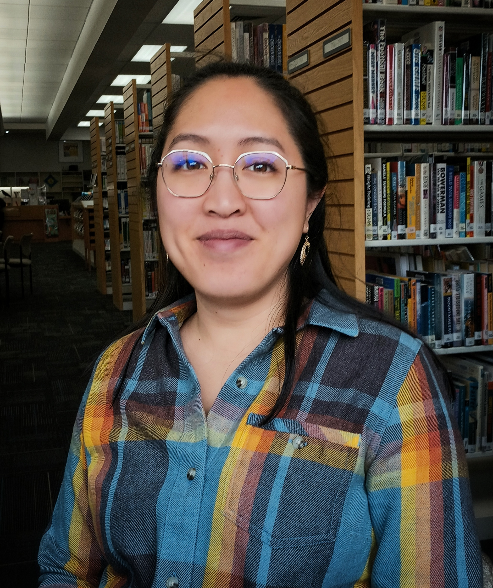

Minh Elan, Adult Services Manager and MLIS Student
Hello! I am Minh Elan, Adult Services Manager at Neill Public Library. NPL serves residents of Pullman, Washington, and I lead our adult services team. Classes and crafts, conversations and books – these are all part of the work. I come by the desire to help adults honestly. As a first-generation Vietnamese American, I watched my immigrant father build a life for his entire 13-person family from the ground up, with help from my rudimentary (but free) translation services.
I first earned a master’s degree in psychology, thinking I could improve lives one counseling session at a time. It turns out I am too impatient for step-by-step plans and found a better fit in the fast pace and wide reach of public libraries. Today, I am in the University of Missouri Library and Information Science program. I hope to continue leveraging my experience and skills for the good of my community.
Education:
Create the appropriate semantic element tag set for each of these sections (hint: remember this is the main, nav, header, etc.).
You must have a header, nav, main, and footer. (hint: remember as you work through grouping your content, when you shrink it down to mobile size, should the content stack or remain side-by-side? This should help you determine if the semantic elements go inside the main or become a semantic section outside of main.)
Place your content within each semantic element.
In the style.css file, apply Flexbox, Grid, and/or Media Query to help you achieve the layout you have in your wireframe.

MLIS | University of Missouri | Expected: December 2025
M.S., Psychology | Washington State University | 2015
B.S., Psychology | Northern Illinois University | 2011
“I have no special talents. I am only passionately curious.” -Albert EinsteinRESUME